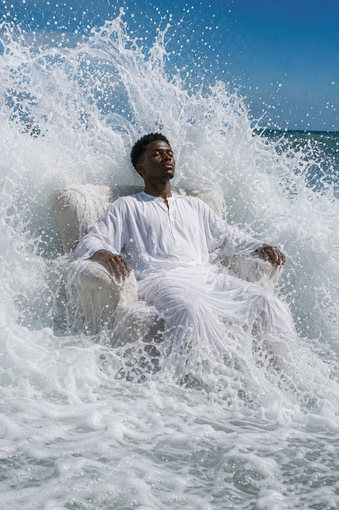

Кастинг · полный метр · Кинопоиск · Москва, Мурманск
Актриса на главную роль — «Тихий январь»
 Sreda Production
·
Опубликовано 21 мая
·
Дедлайн · 6 июня
·
142 отклика
Sreda Production
·
Опубликовано 21 мая
·
Дедлайн · 6 июня
·
142 отклика
О роли
Северная драма о провинциальной учительнице, чья дочь исчезает после метели. Полный метр для Кинопоиск Студии, бюджет 145 ₽ млн (Фонд кино + Кинопоиск). Прокат в кинотеатрах + платформа после окна. Главная героиня — внутренняя сдержанность с прорывами горя, не плакальщица, а человек, который держит себя на воле. Натура — Мурманск и окрестности, павильон — Москва.
- Возраст
- 28–34 года
- Типаж
- славянский, светлые глаза
- Рост
- 165–175 см
- Языки
- русский · северный говор приветствуется
- Опыт
- от 3 главных ролей в полном метре или сериале платформы
- Смены
- 34 (Мурманск 18 + Москва 16)
- Гонорар
- 2.4–3.2 ₽ млн за проект + % с проката
- Платформа
- Кинопоиск (после кинопроката)
- Налог. статус
- ИП или агентский договор
Сцены для самопробы
Скачать все сцены (.pdf)Слейт-стандарт Кинопоиск Студии: имя · рост · агентство · «Тихий январь · самопроба · [дата]». Вертикально, естественный свет, без музыки. В кадре крупный план + ¾ + общий (full body) — Кинопоиск отклонит самопробу только с крупным.
Ваша самопроба
осталось 12 днейМенеджер Лариса Морозова (MS Talents) получит копию автоматически. Кастинг-директор увидит ваше видео только после ручного отбора по фото и формуляру.